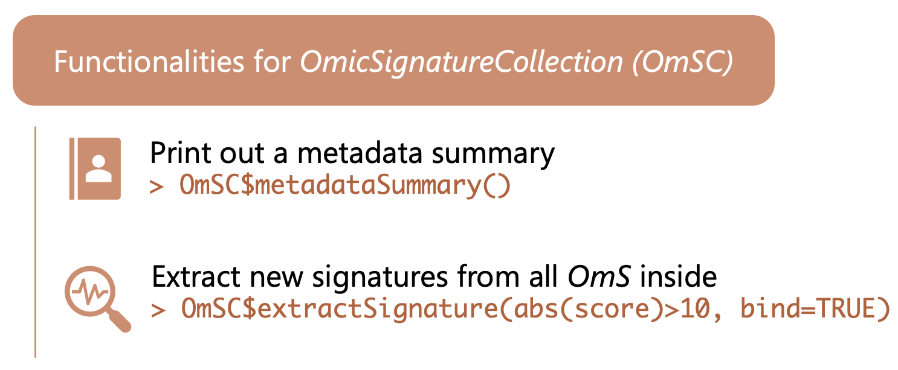

Functionalities of OmicSignatureCollection
Vanessa Mengze Li
08/28/2025
FunOmSC.Rmd
First, create an OmicSignatureCollection object.
This is the same code in “Create
OmicSignatureCollection” section.
The following signatures are pseudo results for illustration
purpose.
OmS1 <- readJson(file.path(system.file("extdata", package = "OmicSignature"), "OmS_example_1.json"))
#> [Success] OmicSignature object Experiment in liver created.
OmS2 <- readJson(file.path(system.file("extdata", package = "OmicSignature"), "OmS_example_2.json"))
#> [Success] OmicSignature object Experiment in brain created.
OmS3 <- readJson(file.path(system.file("extdata", package = "OmicSignature"), "OmS_example_3.json"))
#> [Success] OmicSignature object Experiment in heart created.
ColMeta <- list(
"collection_name" = "OmS_example_Collection",
"description" = "An example of signature collection",
"organism" = "Mus Musculus",
"author" = "me"
)
OmSC <- OmicSignatureCollection$new(
OmicSigList = list(OmS1, OmS2, OmS3),
metadata = ColMeta,
print_message = FALSE
)
#> [Success] OmicSignature Collection OmS_example_Collection created.Print a summary of the metadata in the
OmicSignatureCollection
$metadataSummary() will print out the metadata fields in
all OmicSignature objects stored in the
OmicSignatureCollection.
When parameter “only_shared” is set to be TRUE, only shared
metadata fields among all OmicSignature objects will be
included. Otherwise, all metadata fields will be included.
OmSC$metadataSummary(only_shared = TRUE)
#> Experiment in liver Experiment in brain
#> assay_type "transcriptomics" "transcriptomics"
#> covariates "none" "none"
#> direction_type "bi-directional" "bi-directional"
#> organism "Mus musculus" "Mus musculus"
#> p_cutoff 0.05 0.05
#> phenotype "new_experiment" "new_experiment"
#> platform "transcriptomics by array" "transcriptomics by array"
#> sample_type "liver" "brain"
#> score_cutoff 3 3
#> signature_name "Experiment in liver" "Experiment in brain"
#> Experiment in heart
#> assay_type "transcriptomics"
#> covariates "none"
#> direction_type "bi-directional"
#> organism "Mus musculus"
#> p_cutoff 0.05
#> phenotype "new_experiment"
#> platform "transcriptomics by array"
#> sample_type "heart"
#> score_cutoff 3
#> signature_name "Experiment in heart"Extract new signatures from the OmicSignatureCollection
object
For example, extract all features with a absolute score > 4.5 and
p < 0.01 from all the OmicSignature object stored in
this Collection. The features are ranked by absolute score, if
applicable.
OmSC$extractSignature("abs(score) > 4.5 & p_value < 0.01")
#> sig_name probe_id feature_name score group_label
#> 1 Experiment in brain 14 gene14 -4.99 control
#> 2 Experiment in heart 28 gene28 4.99 treatment
#> 3 Experiment in heart 32 gene32 -4.90 control
#> 4 Experiment in brain 9 gene9 -4.86 control
#> 5 Experiment in brain 15 gene15 -4.77 control
#> 6 Experiment in liver 46 gene46 -4.71 control
#> 7 Experiment in heart 25 gene25 4.71 treatment
#> 8 Experiment in heart 49 gene49 -4.70 control
#> 9 Experiment in liver 13 gene13 4.68 treatment
#> 10 Experiment in liver 48 gene48 -4.67 control
#> 11 Experiment in brain 25 gene25 -4.62 control
#> 12 Experiment in brain 16 gene16 -4.59 control
#> 13 Experiment in heart 6 gene6 -4.54 controlIf bind is set to be FALSE, the output of
each OmicSignature objects are provided as a list.
OmSC$extractSignature("abs(score) > 4.5 & p_value < 0.01", bind = FALSE)
#> $`Experiment in liver`
#> probe_id feature_name score group_label
#> 1 46 gene46 -4.71 control
#> 2 13 gene13 4.68 treatment
#> 3 48 gene48 -4.67 control
#>
#> $`Experiment in brain`
#> probe_id feature_name score group_label
#> 1 14 gene14 -4.99 control
#> 2 9 gene9 -4.86 control
#> 3 15 gene15 -4.77 control
#> 4 25 gene25 -4.62 control
#> 5 16 gene16 -4.59 control
#>
#> $`Experiment in heart`
#> probe_id feature_name score group_label
#> 1 28 gene28 4.99 treatment
#> 2 32 gene32 -4.90 control
#> 3 25 gene25 4.71 treatment
#> 4 49 gene49 -4.70 control
#> 5 6 gene6 -4.54 control